左上：主角的徽章（用他自己正面的頭盔和藍羽飾）、鐵框的血條和架勢條、藍色的回血瓶（主角的顏色是藍色、治療時身上發藍光，用掉的瓶子變成暗的空玻璃瓶）。 下方：Boss 的名字兩側有金線，名字右邊兩顆紅色的標記＝兩管血；血條的鐵框上下有金邊，兩端是像他的王冠的端蓋（金色尖角、暗紅寶石），中間一頂王冠； 紅色的血條有一道淡淡的光每 4 秒流過去。第一階段一管血，打空之後進入第二階段的轉場，轉場的 1.5 秒裡血條回滿（亮的白邊往右推），標記熄掉一顆，第二階段再一管。 只是顯示：遊戲規則（HP 一半進第二階段）沒改。
前後對照（上：原本／改後的左上，下：原本／改後的 Boss 血條）
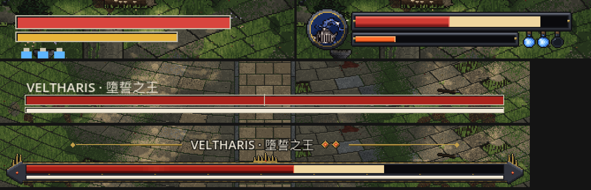
遊戲畫面（2 倍）
開場：都是滿的

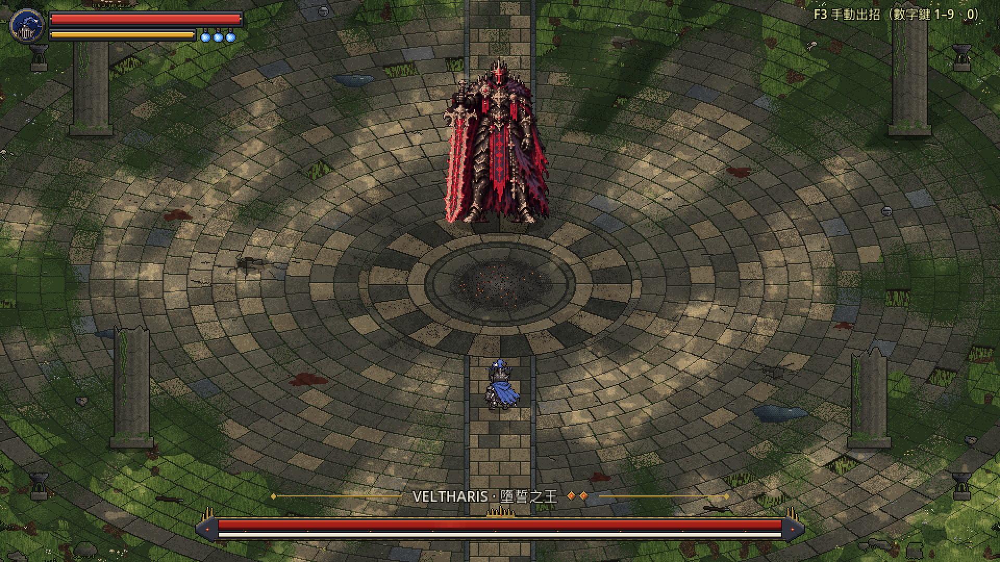
雙方剛受傷：淡黃色是剛扣掉、還在往下追的血；回血瓶用掉一瓶

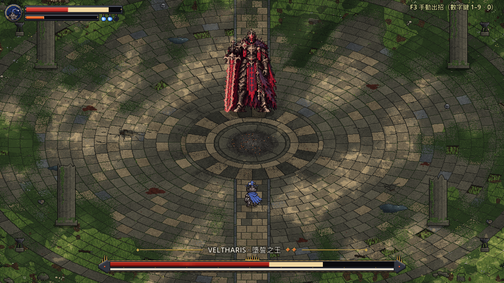
第一管快打空（Boss HP 53%）

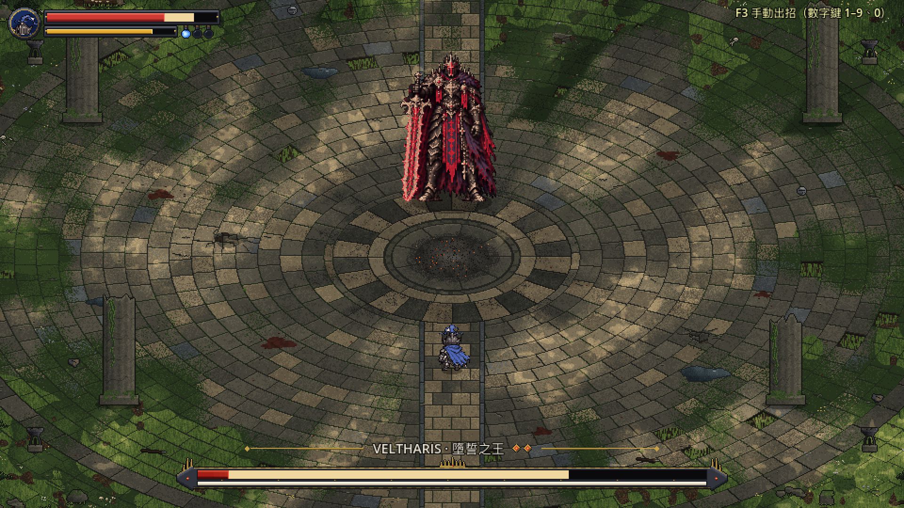
轉場中：血條回滿（白邊往右推），名字旁的標記熄掉一顆

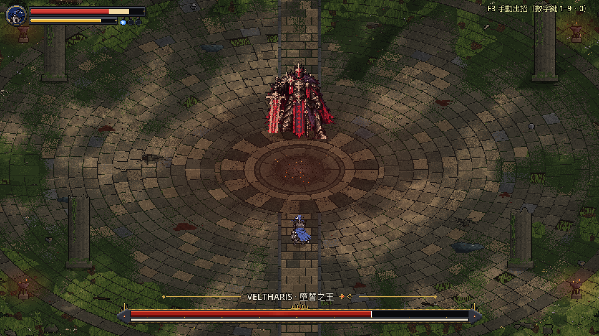
第二階段：第二管（Boss HP 30%＝第二管剩六成）；回血瓶用完

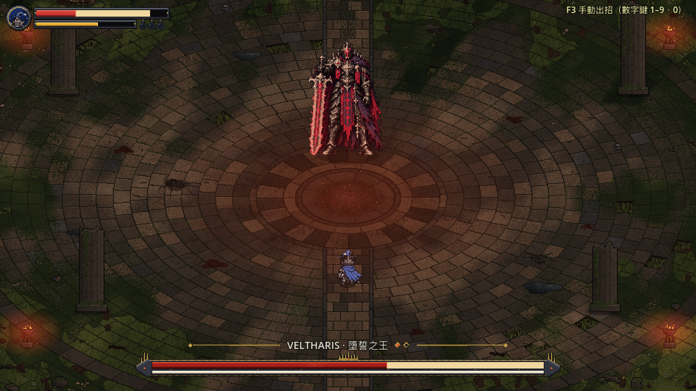
Boss 失衡：韌性條閃爍（和原本一樣）

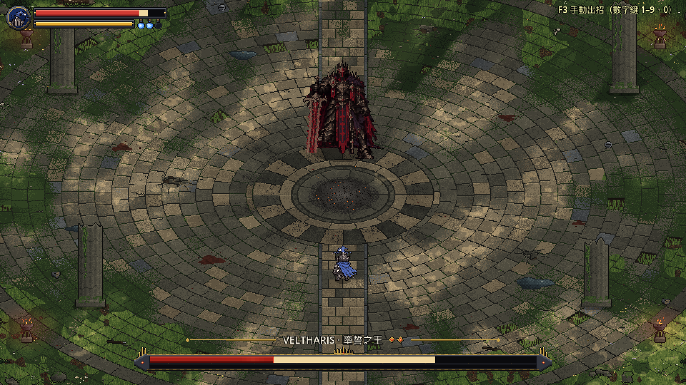
放大（左上 4 倍、Boss 血條 3 倍）
開場
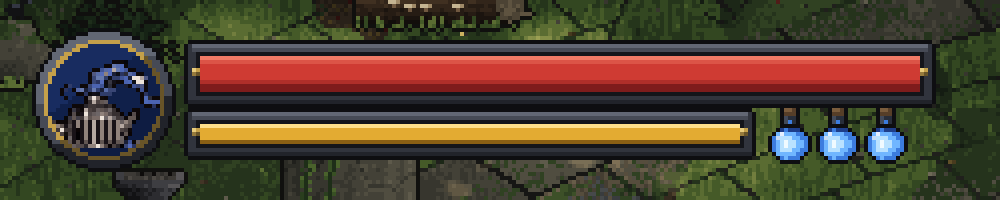
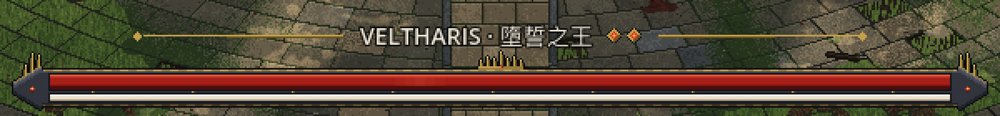
剛受傷
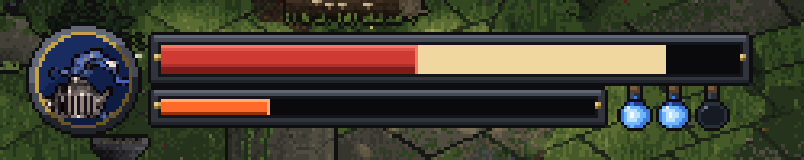
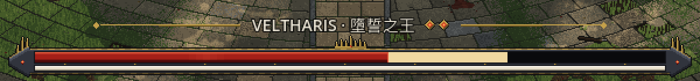
轉場中回滿
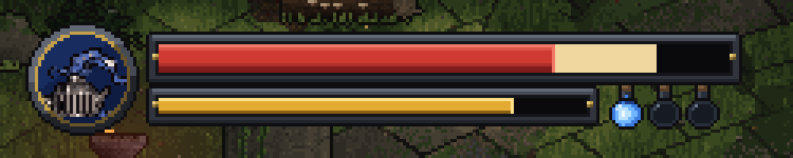
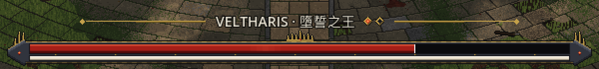
第二階段
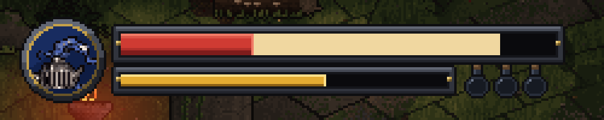
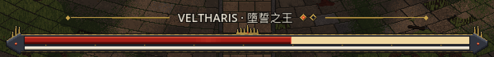
Boss 受擊閃白（左：沒閃，右：閃的那一下）
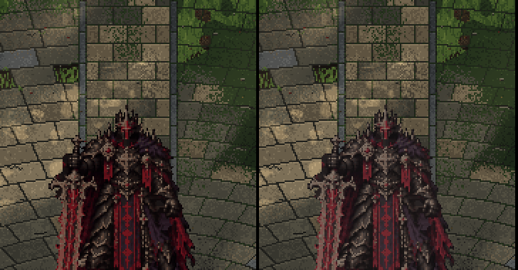
原本整隻往白色混 80%，幾乎變成白色剪影。現在最亮的地方（劍、紅布條、金飾）往白色混 30%、深色的盔甲只有一成左右，看起來像盔甲反光一下；整隻一樣白的話，深色盔甲會變成和地面一樣的灰，像半透明。閃的時間照舊 0.06 秒。